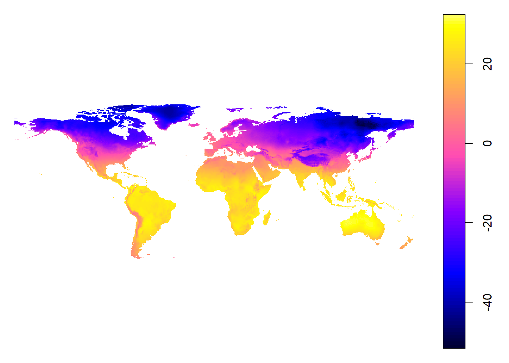
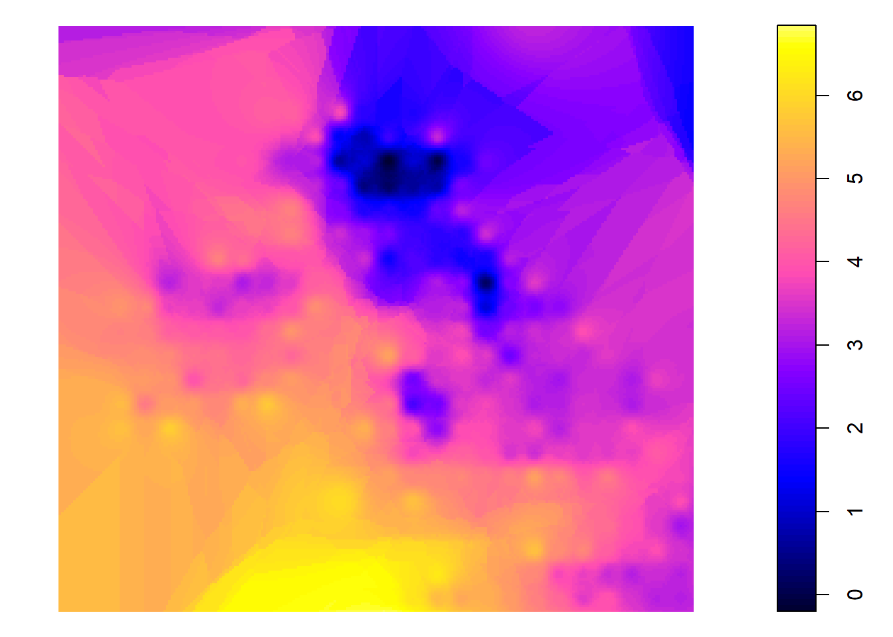

The following examples make use of a NetCDF file of climate data from the Climate Research Unit http://www.cru.uea.ac.uk/data, consisting of long-term mean values (1961-1990) of near-surface air temperature on a 0.5-degree grid (for land points). The dimensions of the array are 720 (longitudes) x 360 (latitudes) x 12 (months).
The idea of the example is to show how weather variables can be interpolated (or extrapolated).
Get lat, lon, time and weather variables
st <- list()
st$lon <- ncvar_get(ncin,"lon")
st$lat <- ncvar_get(ncin,"lat")
st$time <- ncvar_get(ncin, "time")
st$tunits <- ncatt_get(ncin, "time", "units")
st$attrib_names <- names(ncin$var)
st$mnumber = length(time)
st$tp <- ncvar_get(ncin, st$attrib_names[2]) # get tmp arrayThe time variable comes in the hour format. To transform it to the yy-mm-dd hh:mm format use the following command:
as.POSIXct(st$time*3600, origin='1900-01-01 00:00')## [1] "1903-03-04 05:30:00 GMT" "1903-03-05 11:30:00 GMT"
## [3] "1903-03-06 17:30:00 GMT" "1903-03-08 00:00:00 GMT"
## [5] "1903-03-09 06:30:00 GMT" "1903-03-10 13:00:00 GMT"
## [7] "1903-03-11 19:30:00 GMT" "1903-03-13 02:30:00 GMT"
## [9] "1903-03-14 09:00:00 GMT" "1903-03-15 15:30:00 GMT"
## [11] "1903-03-16 22:00:00 GMT" "1903-03-18 04:30:00 GMT"Here tmp data corresponding to the first time point st$time[1] (e.g. 27773.5)) will be regrid/resample it to a smaller resolution. First extract subset to regrid. Remember, is just the number of hours since, you’d need to transform it to a different format to make sense of the number.
grd <- expand.grid(st$lon, st$lat, st$time)
# Set names
names(grd) <- c("lon", "lat", "time")
# Put the data for qnet in a dataframe
vdata <- data.frame(tp = as.numeric(st$tp)) %>% tbl_df()
colnames(vdata) = st$attrib_names[2]
# Bind with the grid
subdata <- grd %>%
tbl_df() %>%
bind_cols(vdata) %>%
filter(time == 27773.5) %>% # select time point
select_("-time") %>%
na.omit()coordinates(subdata) <- ~ lon + lat
gridded(subdata) <- TRUE
plot(subdata)
coor_list <- list()
coor_list$lonmin <- -11
coor_list$lonmax <- 2
coor_list$latmin <- 48
coor_list$latmax <- 60
res = 0.05
data.grid <- expand.grid(lon = seq(coor_list$lonmin, coor_list$lonmax, res),
lat = seq(coor_list$latmin, coor_list$latmax, res))
coordinates(data.grid) <- ~ lon + lat
gridded(data.grid) <- TRUE
# IDW interpolation
f <- as.formula(paste(st$attrib_name[2], ' ~ 1', sep=''))
int_data <- idw(f, locations = subdata, newdata = data.grid, nmax = 5)## [inverse distance weighted interpolation]plot(int_data)
r <- raster(int_data)head(coordinates(r))## x y
## [1,] -11.00 60
## [2,] -10.95 60
## [3,] -10.90 60
## [4,] -10.85 60
## [5,] -10.80 60
## [6,] -10.75 60```